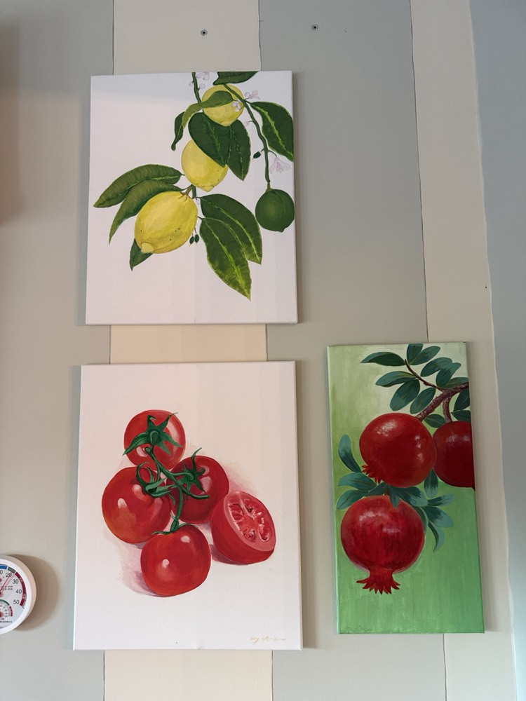
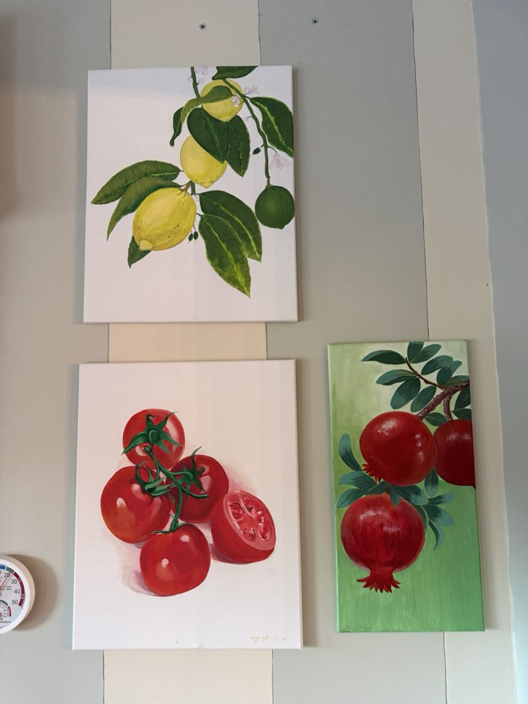
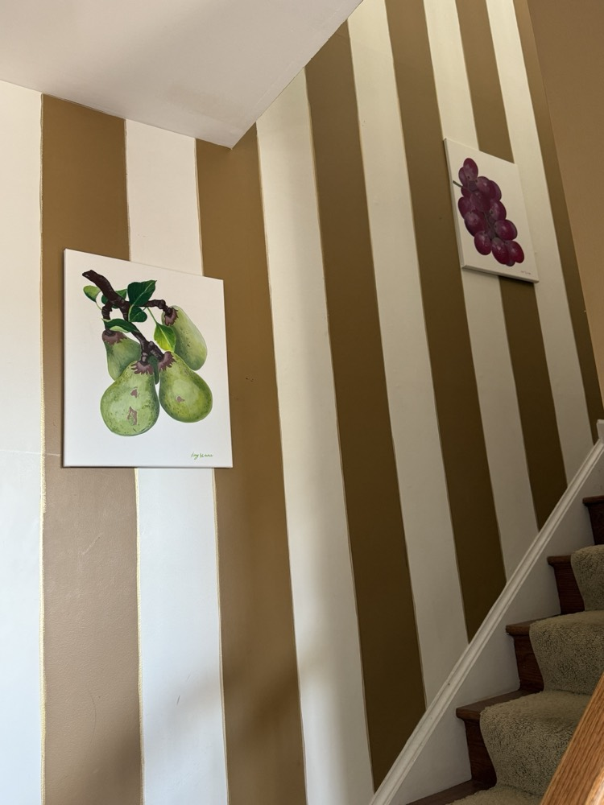
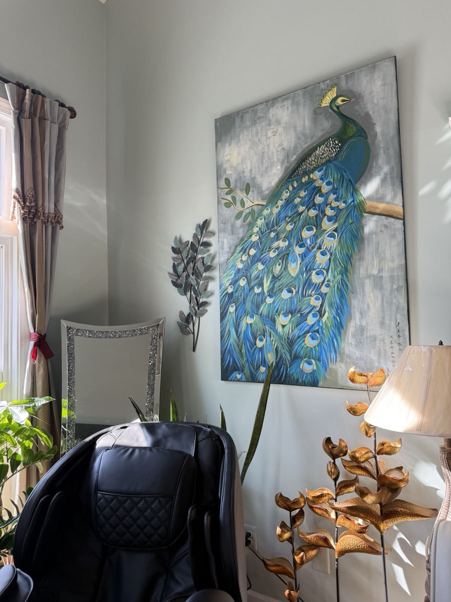
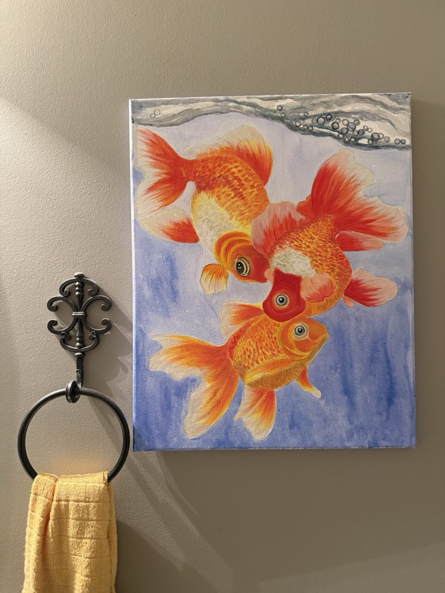
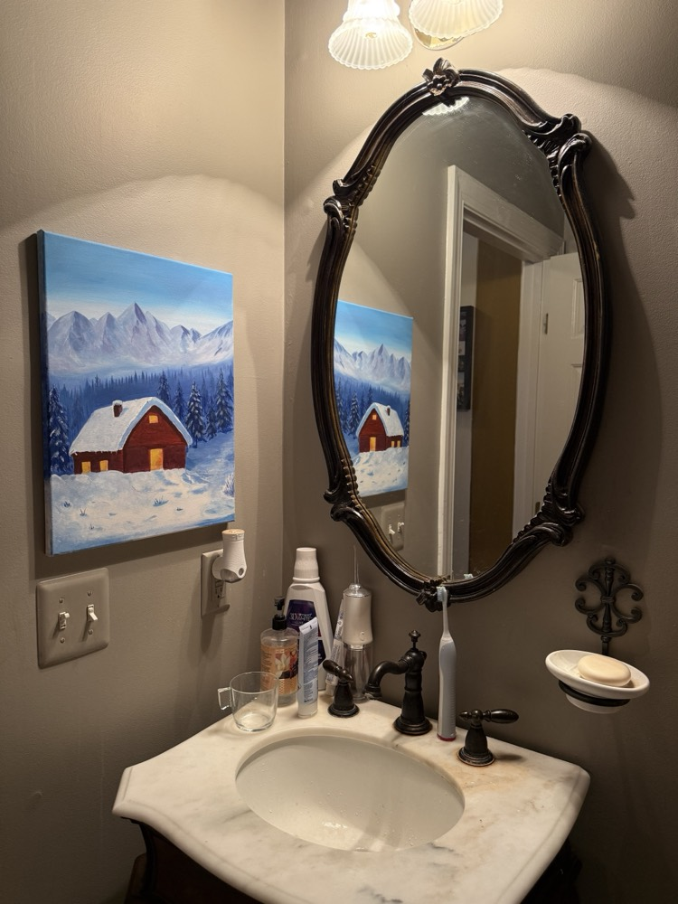

The Panelled Wall
拼板墙
3 works 3 件作品Three fruit paintings hung as a column and a pair: lemons above tomatoes, with the pomegranates set to the right. The panelling's vertical lines do the framing, so the canvases hang close and unmatted. The second photograph is the same wall seen more square on, where the greens carry straight across all three frames and the group reads as one piece of work rather than three.
三幅果实画作以一列加一对的方式悬挂：柠檬在番茄之上，石榴置于右侧。拼板墙的竖线本身就是画框，因此画布挂得紧密，不加卡纸。第二张照片是同一面墙更正面的视角，此时绿意径直贯穿三个画框，整组读起来像一件作品，而非三件。


- Lemons, n.d. 柠檬，年份不详 View in Painting → 在绘画中查看 →
- Tomatoes on the Vine, 2020 藤上番茄，2020 View in Painting → 在绘画中查看 →
- Pomegranates, n.d. 石榴，年份不详 View in Painting → 在绘画中查看 →
The Stairwell
楼梯间
2 works 2 件作品Two paintings carried up a stairwell with gold and cream striped walls: the pears near the foot of the stairs, the red grapes higher along the climb. Photographed from two different steps, then close in on the pears alone. A stairwell is never seen from one place, so the work arrives at a different height with every step.
两幅画作沿着金色与米色条纹的楼梯间一路上行：梨靠近楼梯下段，红葡萄则悬于更高处。分别从两级不同的台阶拍摄，再单独近看那幅梨。楼梯间从来不是从一个位置观看的，每上一级，作品抵达眼前的高度都不同。



- Pears, 2022 梨，2022 View in Painting → 在绘画中查看 →
- Red Grapes, 2024 红葡萄，2024 View in Painting → 在绘画中查看 →
The Living Room Corner
客厅一角
1 work 1 件作品The peacock hung in the corner beside a curtained window, with a tall gold flower sculpture and a lamp standing in front of it. A corner is an awkward place for a painting and a good one for this painting: the tail runs out towards the window, which is the one thing in the room that changes through the day.
孔雀画作挂在垂帘窗边的转角处，前方立着一座高大的金色花卉雕塑与一盏灯。转角对一幅画来说是别扭的位置，但对这一幅恰好合适：尾羽朝窗户的方向铺展，而窗光是房间里一整天唯一会变化的东西。

- Peacock, n.d. 孔雀，年份不详 View in Painting → 在绘画中查看 →
Under the Cornice
顶线之下
1 work 1 件作品The spotted dog hung high on the wall, just under the cornice, with a sunflower painting to its right. At that height a picture is read from across the room rather than up close, and it holds the top of a wall that would otherwise be left bare.
彩点狗高挂于墙面顶部装饰线下方，右侧是一幅向日葵画作。挂在这个高度，画是从房间另一端远观而非近看的；它占住了本会空着的墙顶。

- Spotted Dog, n.d. 彩点狗，年份不详 View in Painting → 在绘画中查看 →
Beside the Door
门边
1 work 1 件作品The redfish on a white wall next to a door frame, with two more canvases above and to the left. The narrow strip of wall beside a door is usually left bare. One painting the width of that strip turns it into the thing you look at on the way through.
红鼓鱼挂在门框旁的白墙上，上方与左侧另有两幅画布。门边那条窄窄的墙面通常是空着的。一幅恰好与之同宽的画，把它变成了你经过时会去看的地方。

- Redfish, n.d. 红鼓鱼，年份不详 View in Painting → 在绘画中查看 →
The Washrooms
洗手间
2 works 2 件作品Two small rooms, one painting each: the goldfish beside a towel ring on warm grey, and the winter cabin above a basin, where the oval mirror shows it a second time. A room this size is only ever seen from arm's length, which is a hard test of a painting and a generous one: nothing is lost to distance.
两个小房间，各挂一幅：金鱼挂在暖灰色墙面的毛巾环旁；冬日木屋悬于洗手台之上，椭圆镜又将它映出第二次。这样大小的房间只会被在一臂之内观看，这对一幅画既是严苛的考验，也是慷慨的礼遇：没有任何细节会被距离吞没。


- Goldfish, n.d. 金鱼，年份不详 View in Painting → 在绘画中查看 →
- Cabin in Winter, n.d. 冬日木屋，年份不详 View in Painting → 在绘画中查看 →
The White Wall
白墙
1 work 1 件作品The one drawing in the gallery, framed and hung high on a white wall above a second frame, with a tall indoor tree to the left. Paper asks for glass and a mount, so it hangs differently from the canvases: set back behind the frame rather than sitting out on the wall.
画廊中唯一的一幅素描，装框后高挂于白墙，下方还有另一幅画框，左侧是一棵高大的室内绿植。纸本需要玻璃与卡纸，因此它的悬挂方式与画布不同：被框住并后退一层，而不是直接贴在墙上。

- Two Dogs and Cherry Blossoms, n.d. 双犬与樱花，年份不详 View in Drawing → 在素描中查看 →